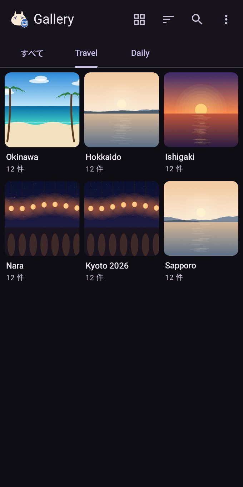
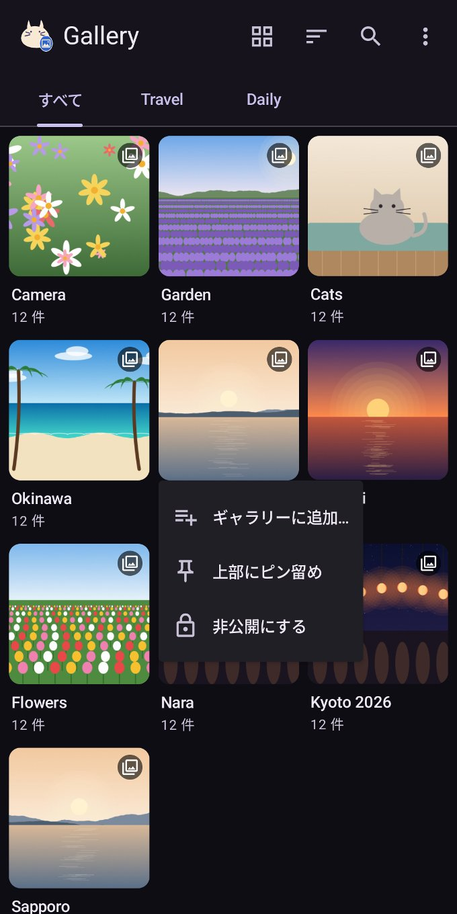
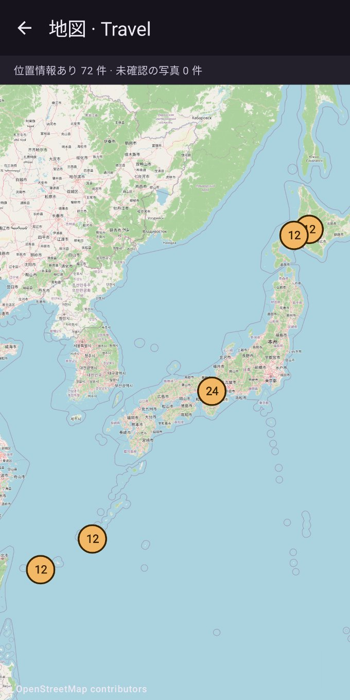
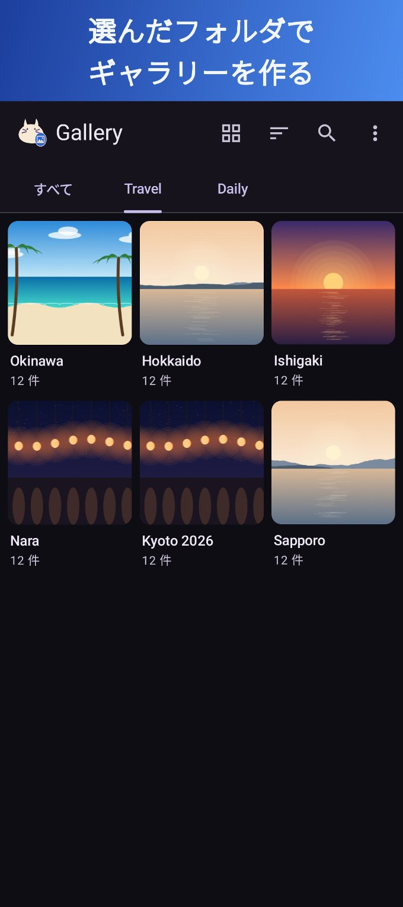
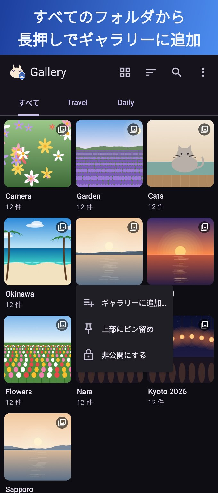
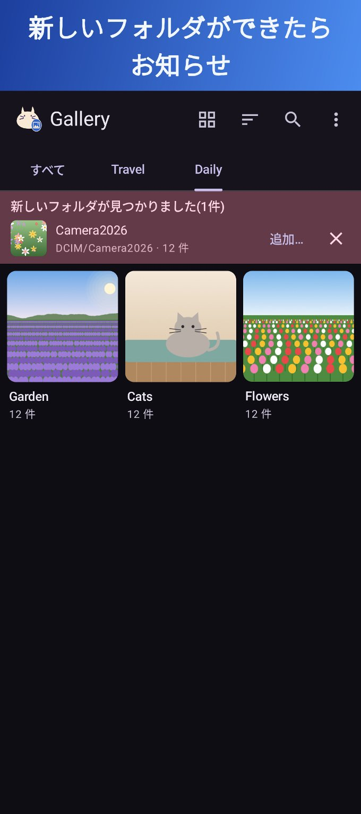
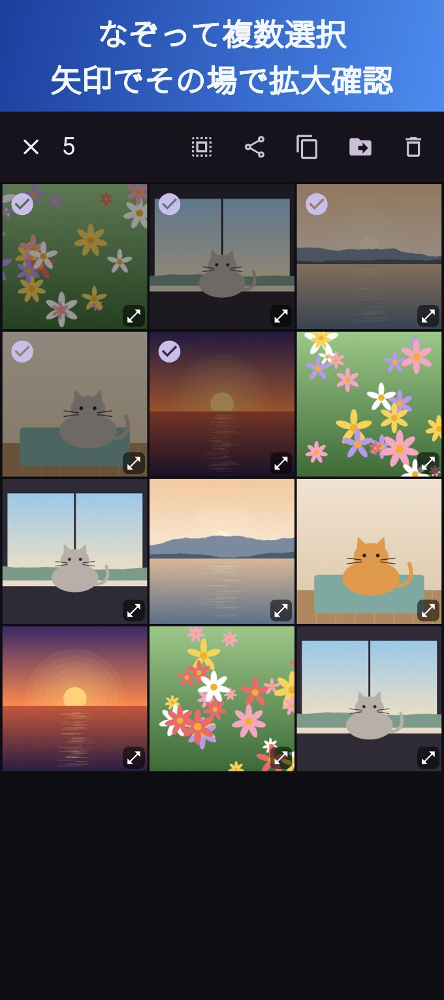
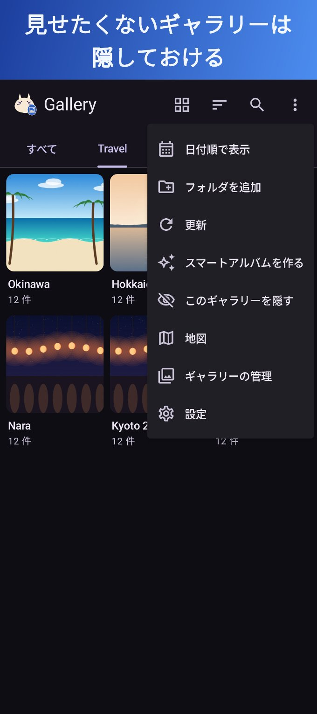
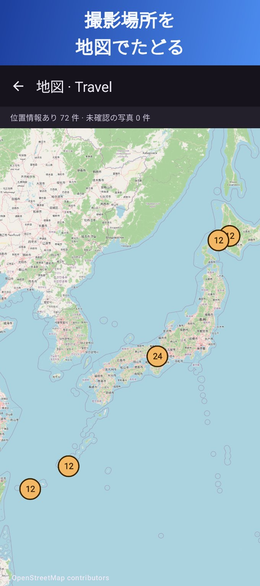
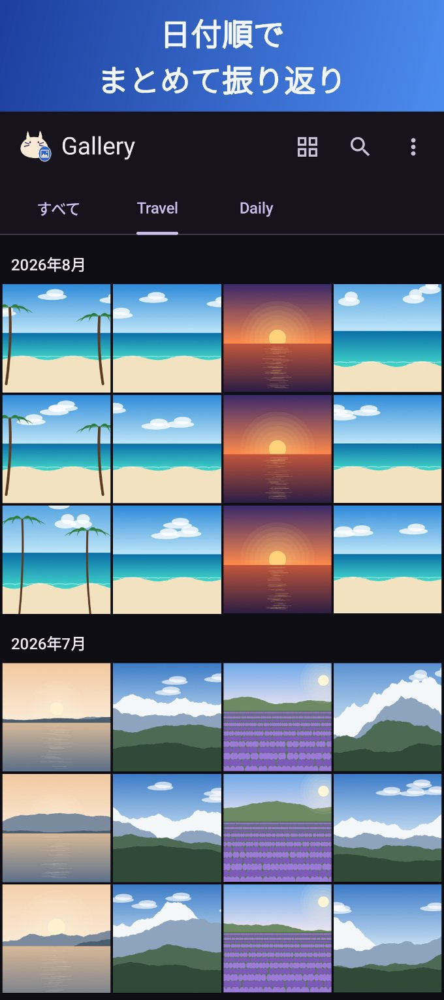

選んだフォルダで、自分だけのギャラリーに
普通のギャラリーアプリは、スマホの写真を全部ずらっと並べるだけ。Galleryでは、カメラ・スクショ・旅行・趣味など、見たいフォルダだけを選んでギャラリーを作れます。新しいフォルダができたらお知らせするので、整理したフォルダもすぐに追いかけられます。

スマホ内のすべてのフォルダから、長押しでギャラリーに追加。


見たいフォルダだけを、見たい順に。
「写真」「旅行」「趣味」など、ギャラリーを左右スワイプで切り替え。サブフォルダも含められ、いらないフォルダは除外。アルバム表示と日付順、並び順もギャラリーごとに。
Camera が Camera2026 に切り替わったときなど、新しいフォルダができたらお知らせ。元の写真が入っていたギャラリーをおすすめし、ワンタップで追加できます。
ギャラリーや「すべて」タブを隠しておけます。隠したものは検索やお気に入りにも出ず、再表示には端末の画面ロックが必要です。
長押ししてそのままなぞると複数選択。選択中も矢印で大きく確認できます。共有・コピー・移動・削除(Androidのゴミ箱へ)もアプリから。
ほかのアプリが「.nomedia」で隠したフォルダも、フォルダを選んで追加すれば表示できます。
日付順と高速スクロール、お気に入り、タグ、検索、撮影場所の地図、スライドショー。動画プレイヤーはジェスチャー操作と回転固定に対応。







見る・整理する・隠す機能は無料。もっと使いこなしたい方にProを用意しています。
写真や動画は、スマホの外に出ません。